Built in v0.4.64 (new branch, PR not merged). Every picture and clip is drawn by the app's own code — the frames the editor previews and
the export writes. Under each still: the automatic layout check (no text running into other text, cut by its box or off the frame).
Stand-ins as before: “your footage” is the NYPD briefing photo, words and photos are the approved Javits material.
In the app: Motion › Look of all cinematic graphics › Type and layout (the whole project), or select a graphic › LOOK › Type and layout.
The colours and backgrounds page: look options (v0.4.63).
Moving examples — narration, word timing and the designed sound
Legal outcome over your footage: now darkened 75% by default (was 62%), so its small red labels readOver a picture the text must be light, so it uses dark docket instead of cream & oxblood.Turning point mirrored (photo on the left), Editorial serifInvestigative findings: Bold sans, text 115%, mirrored (photo on the right)Digital evidence at 85% size, centred, over your footage (the darkening still fills the frame)Timeline at 85%, at the bottom, Condensed, over your footage
1 · The crowded timeline (fixed)
Five events are closer together than a 330 px card, so the labels ran into each other (“retained” into “Community”). Now the cards,
their labels and the dates narrow to the spacing. Timelines with up to four events are drawn exactly as before (the approved Javits stills are pixel-identical).
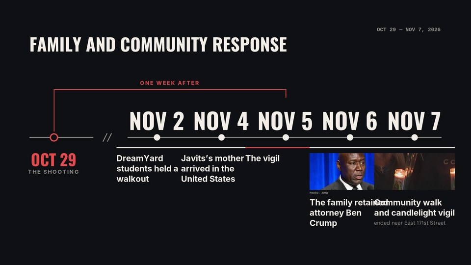
Before (v0.4.63)layout check: overlap: The family retained / Community walkAfter (v0.4.64)layout check ✓
2 · Legal outcome over footage is darker by default
Its small red labels (DEFENDANT, CHARGES, BEFORE) measured 2.8:1 over a mid-grey picture at the general 62% — under the 3:1 minimum. At 75% they measure 3.5:1.
A darkening you set yourself (project or graphic) still wins.
62% (the old default)layout check ✓Over a picture the text must be light, so it uses dark docket instead of cream & oxblood.
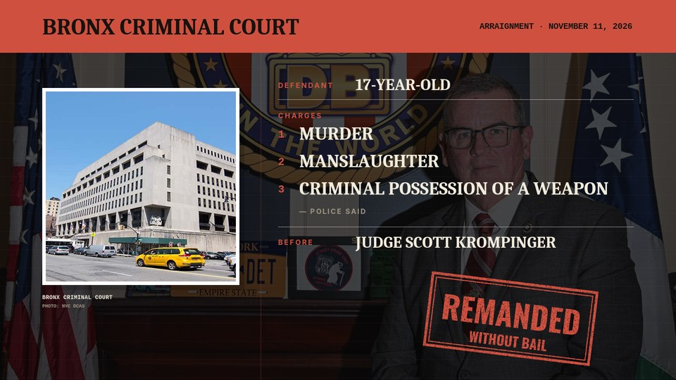
75% (the new default for legal)layout check ✓Over a picture the text must be light, so it uses dark docket instead of cream & oxblood.
3 · Font
Five styles from the fonts bundled with the app (nothing downloaded): Condensed, Bold sans, Editorial serif, Geometric, Typewriter.
Each category offers the ones its layout passed the layout check with (all text sizes, mirrored too); its own design is always first.
Big headlines and dates fit their space in any font.
Headings, labels and body text; the rows and lines below make room. The big dates and headlines are composed for each design and fitted.
Investigative findings
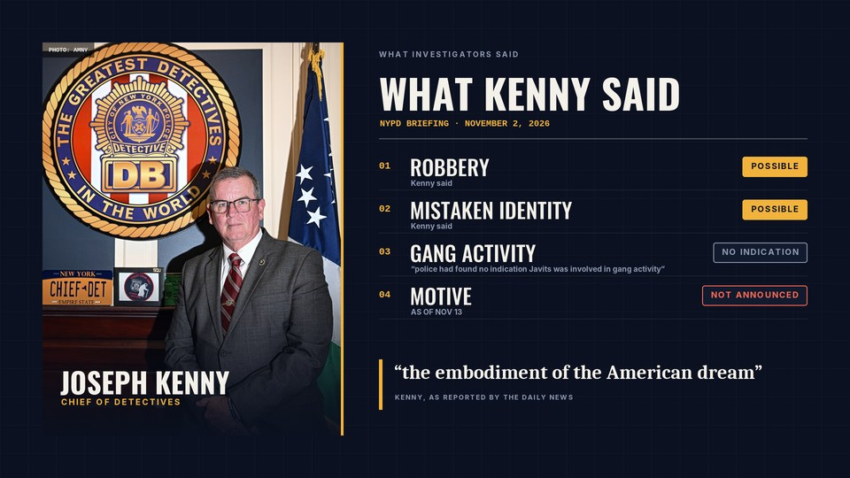
85%layout check ✓100%layout check ✓
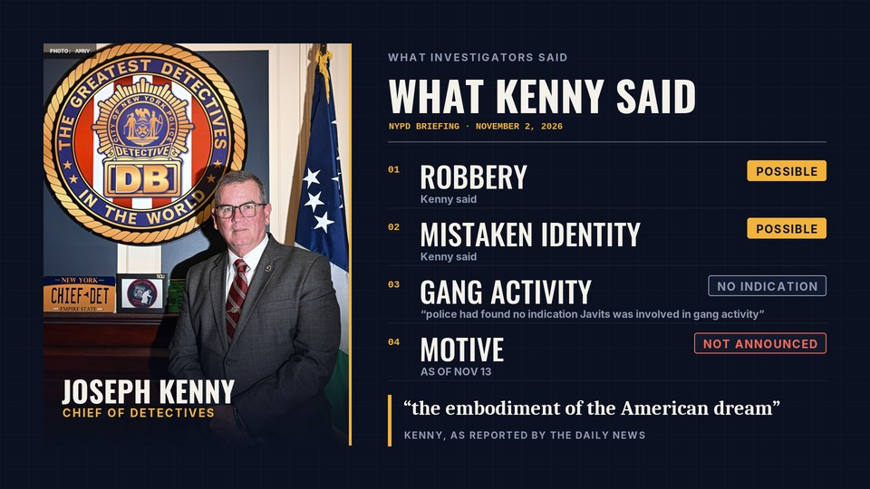
115%layout check ✓
Timeline
85%layout check ✓100%layout check ✓
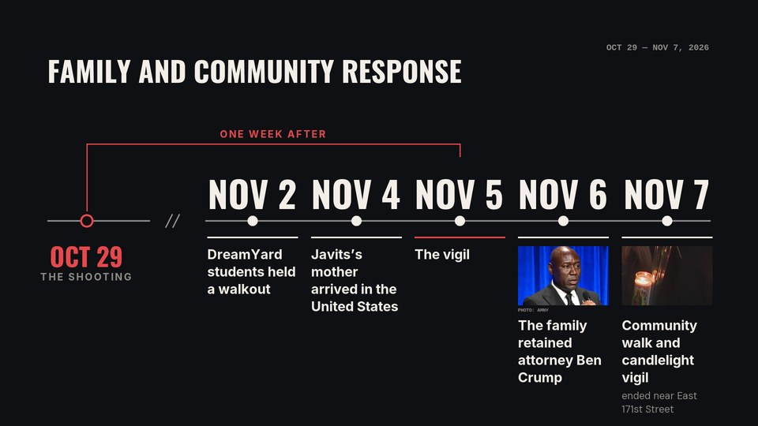
115%layout check ✓
Contradiction
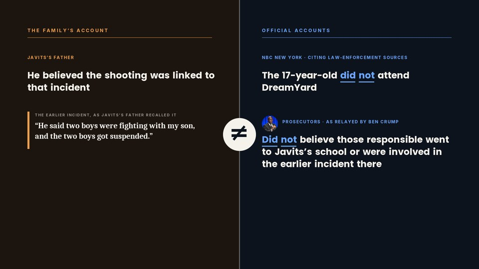
85%layout check ✓100%layout check ✓
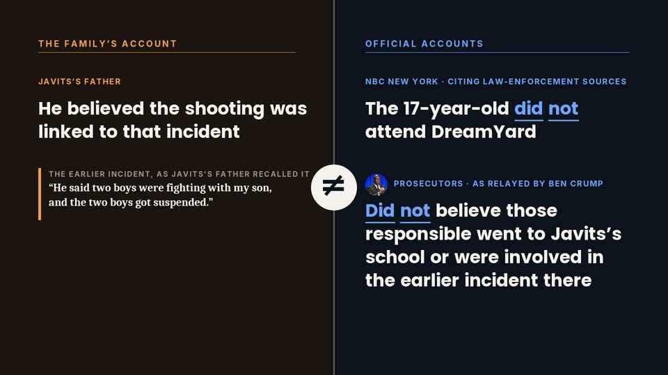
115%layout check ✓
Legal outcome
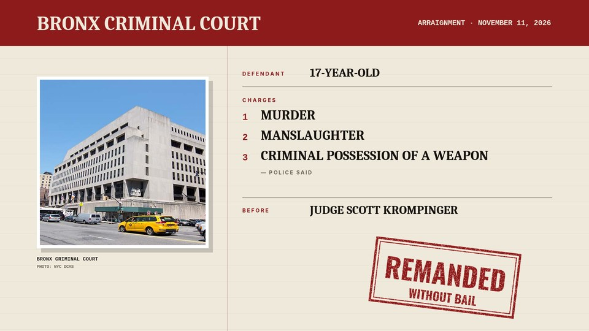
85%layout check ✓
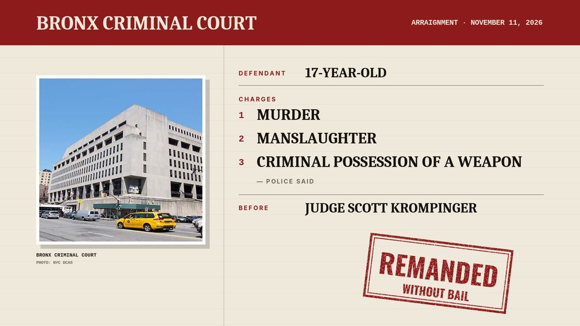
100%layout check ✓
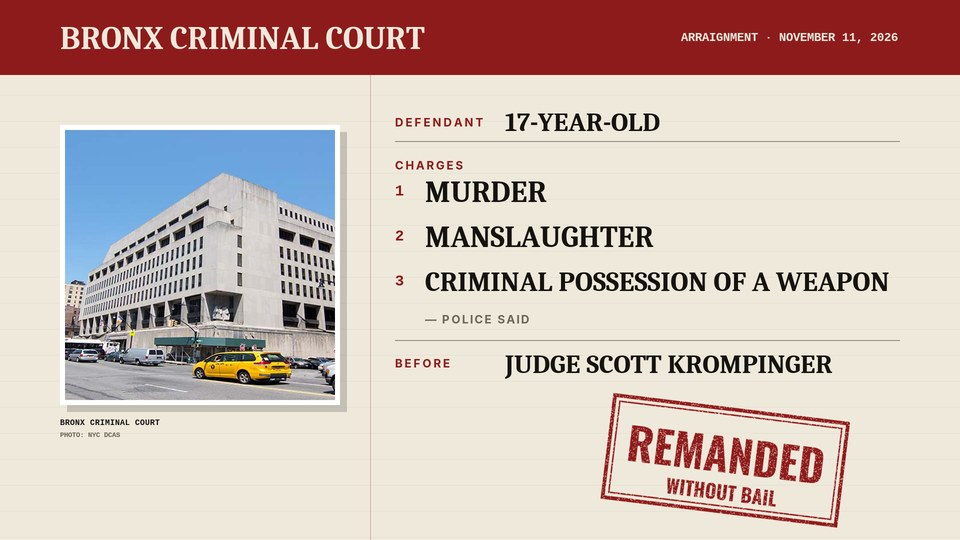
115%layout check ✓
5 · Layout mirrored (the “alignment” the designs allow)
Photo and text swap sides, for the three layouts built as a photo beside text.
The timeline (time runs left to right), the evidence route and the two-sided contradiction keep their layout.
Investigative findings
As designedlayout check ✓
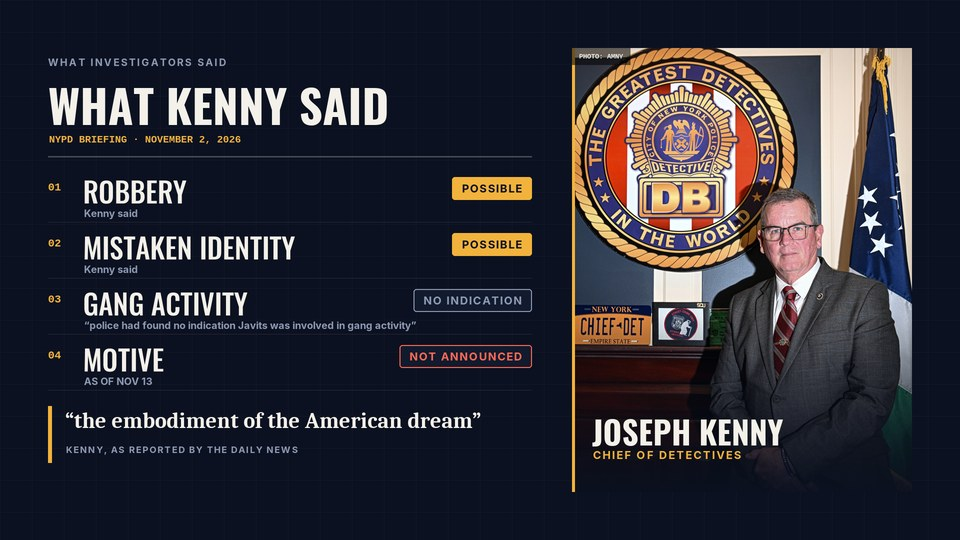
Mirrored: photo on the rightlayout check ✓
Legal outcome
As designedlayout check ✓
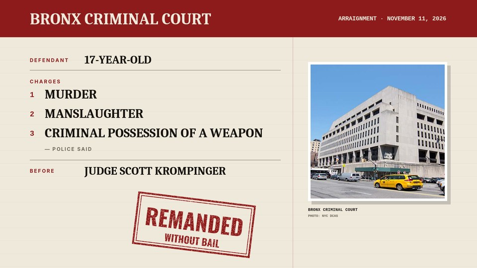
Mirrored: courthouse photo on the rightlayout check ✓
Turning point
As designedlayout check ✓
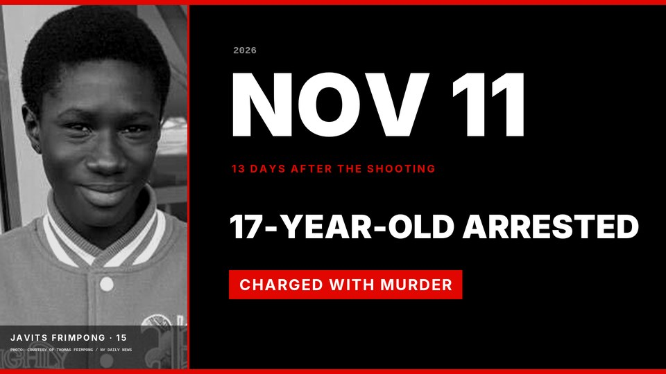
Mirrored: photo on the leftlayout check ✓
6 · Layout size and position
80–100%, placed anywhere in the frame (the 3×3 grid in the editor, then nudge); at full size a small nudge.
The background — its own, your darkened footage or a picture — still fills the frame. Contradiction fills the screen and keeps its size.
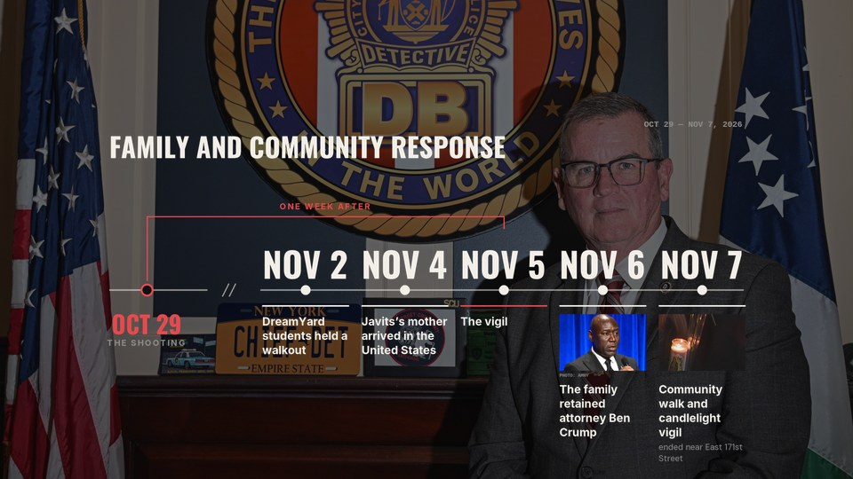
Timeline · 85% · bottom · over your footagelayout check ✓
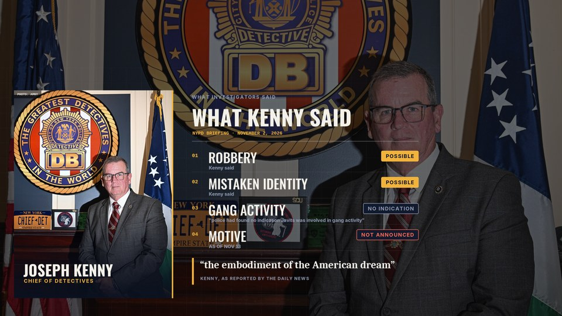
Findings · 80% · bottom left · over your footagelayout check ✓
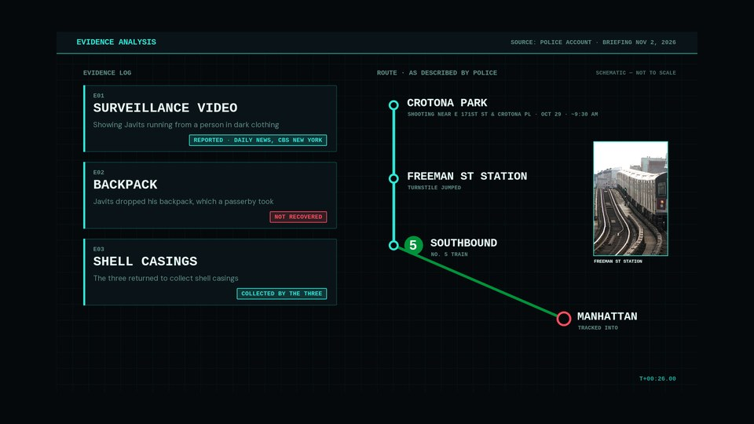
Digital evidence · 85% · centre · its own backgroundlayout check ✓
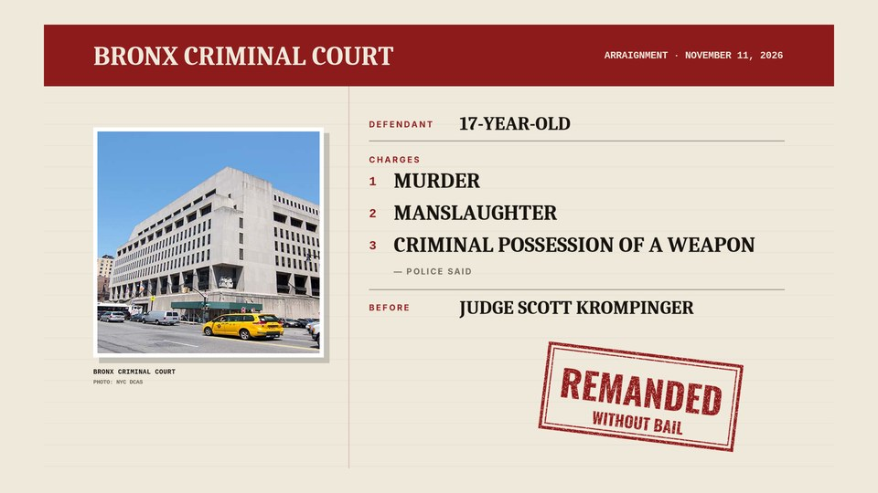
Legal outcome · 90% · centrelayout check ✓
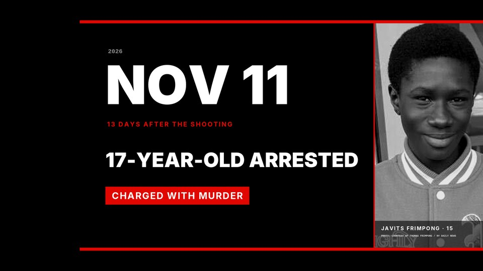
Turning point · 85% · rightlayout check ✓Contradiction · asked for 80%: keeps its size (fills the screen)layout check ✓Contradictory Statements fills the screen: it keeps its size and position.